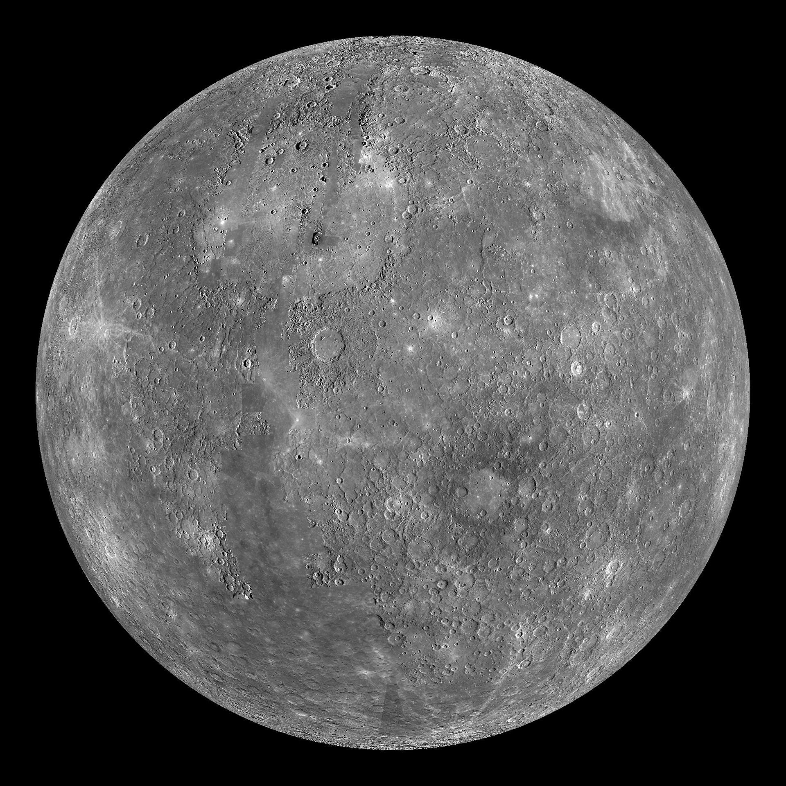
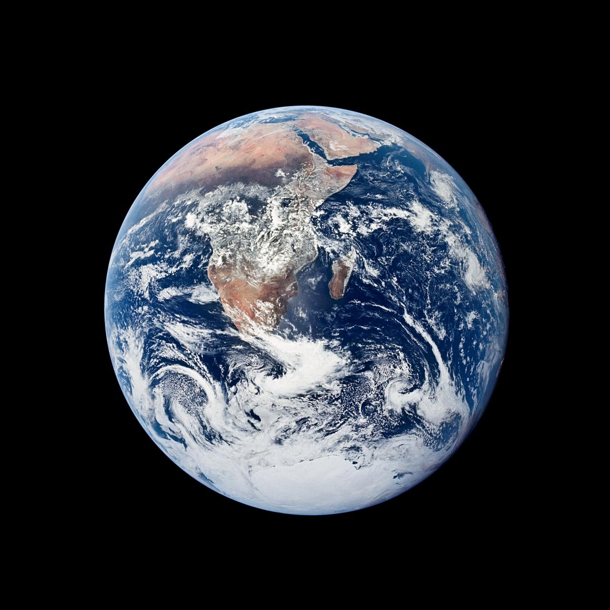
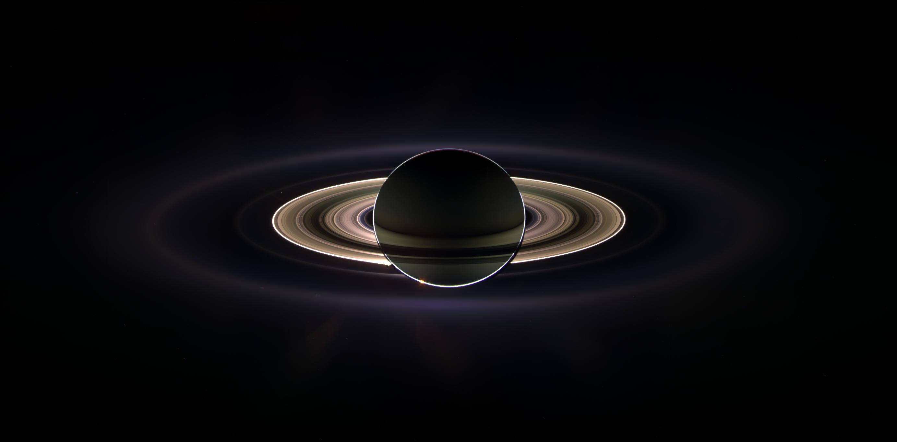
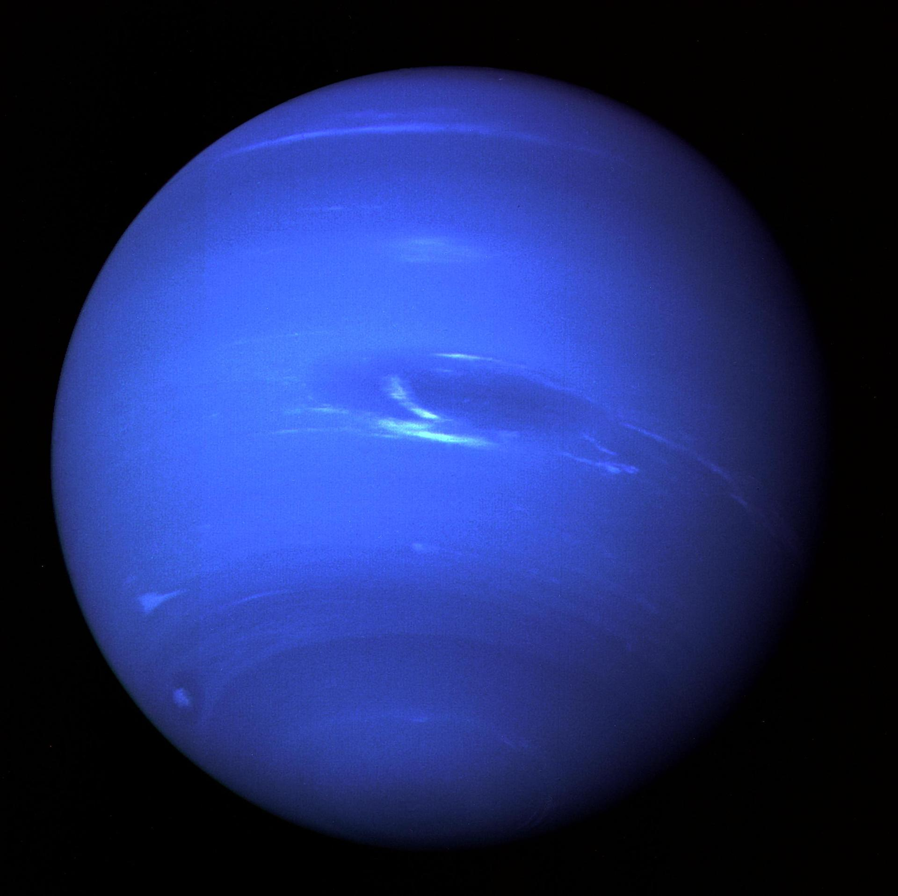

解释层 / 我们自己的后院
太阳系：从别人的星光回到自己的行星
银河看久了，别忘了我们自己也住在一颗行星上。月球和火星的表面是真实探测器测绘的全图——可以一路拉近到山和陨石坑；其余行星是各任务拍下的原版照片。
月球
默认底图：NASA 月球勘测轨道器全图（每像素 100 米）。可切换成嫦娥二号 7 米分辨率图——中国探月工程的官方测绘。
飞到
底图
火星
默认底图：Viking 彩色全图（真实颜色感的锈红火星）。切换 MOLA 彩色高程能看出山有多高、谷有多深——蓝色低、红色高。
飞到
底图
行星画廊
每张都是任务原片，点开看大图。奥林帕斯山比珠峰高两倍半；土星那张是卡西尼躲进土星影子里回望拍下的。








加载贴图…
拖动旋转 · 滚轮或双指缩放